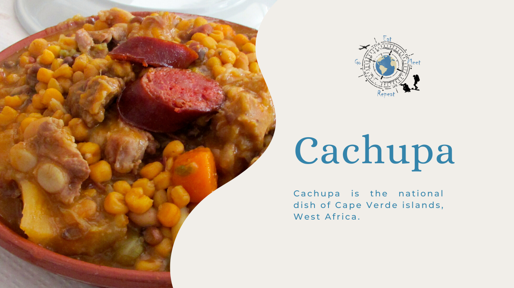

Cachupa

Description
Cachupa is a famous dish from Cape Verde. It is a slow cooked stew of hominy (dried maize kernels that have been treated with an alkali), beans, cassava, sweet potato, fish or meat (sausage, beef, goat or chicken), and often morcela (blood sausage).
Referred to as the country's national dish, each island has its own regional variation. The version of the recipe called cachupa rica tends to have more ingredients than the simpler cachupa pobre.
Ingredients
- 4 boneless, skinless chicken thighs
- 1 stick chorizo
- 4 boneless pork spare ribs
- 1lbs beef stew meat
- 1 can of tomatoes
- 2 cans red kidney beans
- 2 cans yellow hominy
- 1 sliced carrot
- 2 sweet potatoes
- 6 chopped garlic cloves
- 1 chopped yellow onion
- Olive oil
- Red chili powder
Steps
- Pour 3-4 tablespoons of olive oil into a cooking pot and sauté the onions and garlic. Add the tomatoes, seasonings, and the meat cut in larger dice.
- Stir well, then add water to cover all ingredients.
- Add the vegetables, as well as the beans and hominy, then give it a stir to mix all ingredients.
- Cover and simmer for at least two hours, until the stew reaches the desired consistency. If you like it denser, the cooking time is about three and a half hours.
- Serve with slices of sautéed chorizo.